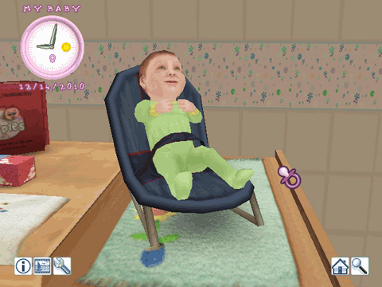
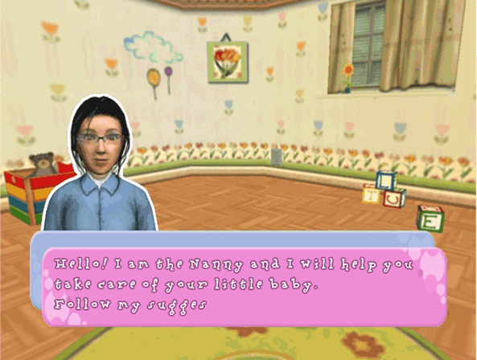

Los siguientes elementos aparecerán en pantalla durante la partida.

Icono de información
Al elegir este icono, verás los datos de tu bebé. Muestra el nivel de cada elemento que afecta a tu bebé. Elige este icono una segunda vez para salir al menú.
Icono de fotos
Elige este icono para sacar una foto instantánea de tu bebé.
Icono de actividades
Te da acceso al menú de interacción. En él puedes elegir tu inventario o jugar a los minijuegos disponibles.
Icono de la casa
El icono de la casa te dejará ver primero el mapa de la casa. Elige cualquiera de las habitaciones para verla. ¡Elige el icono "A la ciudad" para ir de compras a la ciudad!
Icono de zoom
Al elegir este icono la cámara alternará entre una vista lejana y un primer plano.
La niñera
La niñera es un personaje muy importante en el juego. Te hará sugerencias de vez en cuando y te avisará de todo error que puedas estar cometiendo. ¡Sus consejos os ayudarán a ser unos buenos padres!
